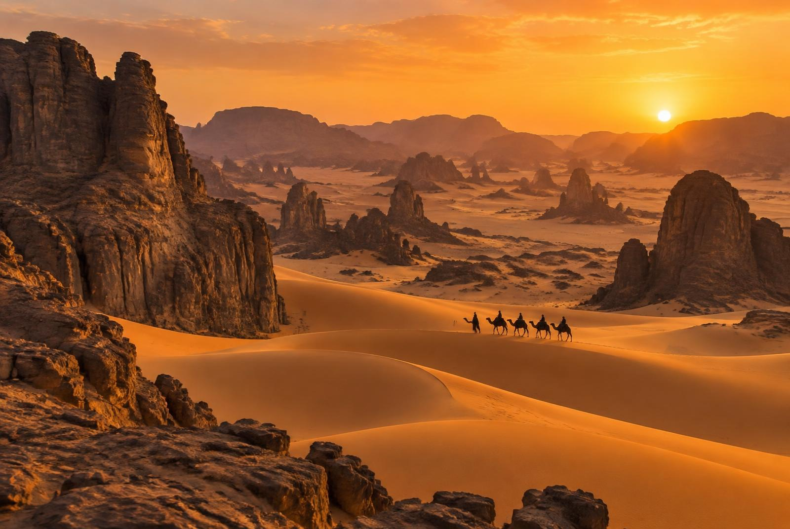
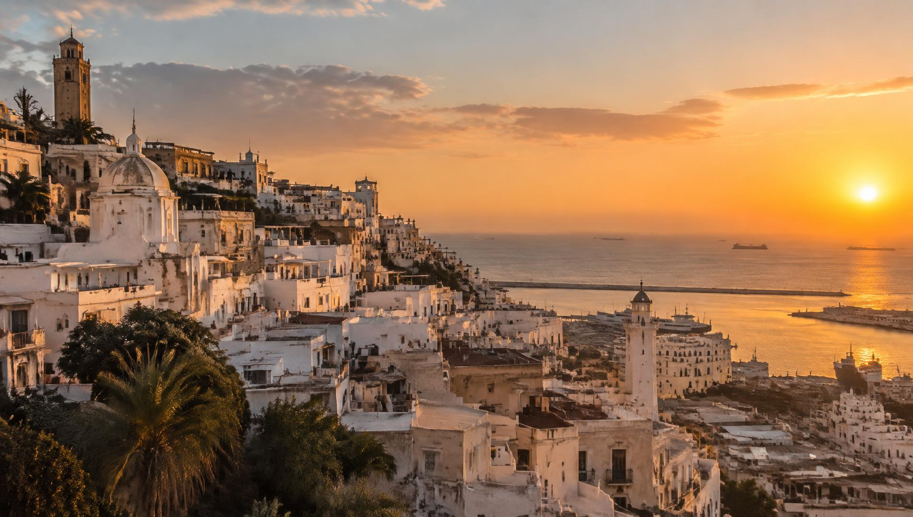
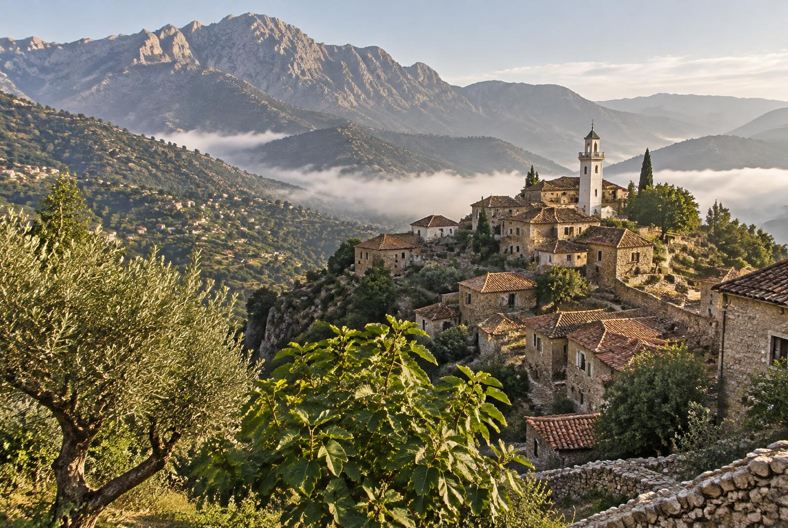
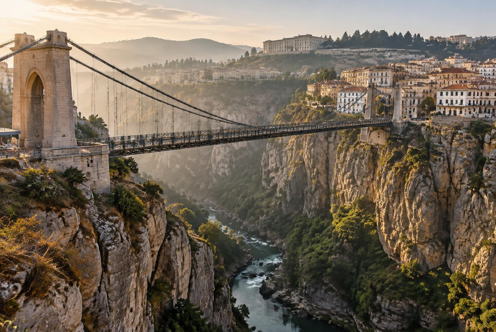

وجهات سياحية
Destinations
Quatre régions, quatre ambiances : la médina, le désert, la montagne et la ville suspendue.

01Alger · Côte méditerranéenne
قصبة الجزائر
La Casbah d'Alger
La médina blanche face à la mer
Classée au patrimoine mondial de l'UNESCO, la Casbah dévale la colline jusqu'à la baie d'Alger. Ses ruelles en escaliers, ses maisons à patio, ses mosquées ottomanes et ses portes sculptées racontent des siècles d'histoire berbère, arabe, andalouse et ottomane.
- Le palais du Dey et la citadelle
- La mosquée Ketchaoua
- Les terrasses avec vue sur la baie
- Les artisans dinandiers et ébénistes
Meilleure période : Printemps et automne
Tassili n'Ajjer · Djanet · Tamanrasset
الصحراء الكبرى
Le Sahara
L'immensité dorée des dunes
Plus de 80 % du territoire algérien est désertique. Au Tassili n'Ajjer, des forêts de pierre et des milliers de peintures rupestres veillent sur l'erg. Nuits étoilées, thé partagé avec les Touaregs et levers de soleil sur l'Assekrem : une expérience hors du temps.
- Les gravures rupestres du Tassili
- Le plateau de l'Assekrem au lever du jour
- Les dunes de Tin Merzouga
- Les oasis et ksour de Ghardaïa
Meilleure période : D'octobre à mars

03Tizi Ouzou · Béjaïa · Djurdjura
منطقة القبائل
La Kabylie
Montagnes, villages et traditions amazighes
Entre les sommets du Djurdjura et la Méditerranée, la Kabylie offre des villages perchés, des oliveraies centenaires et des forêts de cèdres. Terre de la culture amazighe, elle est réputée pour ses bijoux en argent, ses poteries peintes et l'hospitalité de ses habitants.
- Le parc national du Djurdjura
- Les villages de Beni Yenni et leurs bijoutiers
- Le cap Carbon et la côte de Béjaïa
- La fête de l'olive en hiver
Meilleure période : D'avril à octobre

04Est algérien · Gorges du Rhumel
قسنطينة
Constantine
La ville des ponts suspendus
Perchée sur un rocher et entaillée par les gorges vertigineuses du Rhumel, Constantine est l'une des plus anciennes villes du monde. Ses ponts suspendus, sa vieille médina et son palais Ahmed Bey en font la capitale culturelle de l'Est et le berceau du malouf.
- Le pont suspendu de Sidi M'Cid
- Le palais Ahmed Bey
- Le monument aux morts dominant la ville
- Les concerts de musique malouf
Meilleure période : Printemps et automne
L'Algérie vous attend
Retournez à l'accueil pour en apprendre davantage sur l'histoire et la culture du pays.
Retour à l'accueil